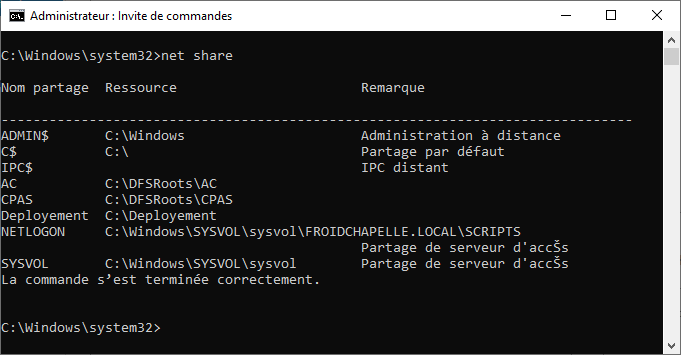
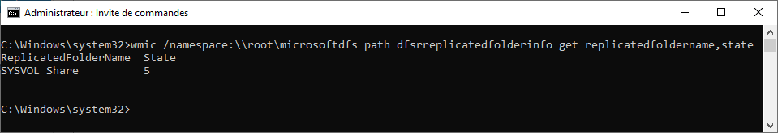

Tutorial – Active Directory Health Check
This check verifies that SYSVOL and NETLOGON are available and correctly replicated across Domain Controllers.
Open Command Prompt and run:
net share
Verify that:

Run:
wmic /namespace:\\root\microsoftdfs path dfsrreplicatedfolderinfo get replicatedfoldername,state
Verify that:
